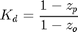
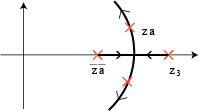
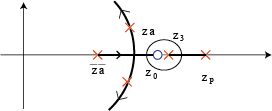

Extras: Designing digital lead and lag compensators using the root-locus method
Contents
Lead and lag compensators are used quite extensively in control design. As you may have seen in the continuous lead and lag compensator design tutorial, a lead compensator can increase the stability or response speed of a system, while a lag compensator can reduce the steady-state error. Depending on the effect desired, one or more lead and lag compensators may be used in various combinations.
In this page, you will learn how to design digital lead and lag compensators using the root-locus design method.
Lead or phase-lead compensator
Consider the first-order compensator shown below.
(1)
The gain (Kd) will be defined as follows so as not to affect the steady-state response.
(2)
The pole (zp) must be a real value inside the unit circle. For a lead compensator, the zero is greater than the pole (zo > zp) and the gain Kd is greater than 1.
Generally for the design of a lead compensator, the zero (zo) is placed close to the location of one of the plant's poles to achieve an approximate pole-zero cancellation. The compensator pole (zp) is then placed to the left of the zero so that the root-locus will shift to the left. The figure below illustrates how the root-locus shifts by placing the pole and the zero.

Shifting the root-locus to the left results in faster response time.
Now the question is, how far left do we need to shift the root locus? It depends on design requirements such as rise time, settling time, and overshoot. You may use the figure and the three equations shown in the stability and transient response section of the Digital Control Tutorial to determine the desired root locations. You may need to select the location of the compensator pole (zp) by trial and error until you get the desired root locus shape. After you have done that, use the MATLAB function rlocfind to select the desired closed-loop poles and obtain a corresponding additional gain (K); thus, obtaining the desired response. You may also find the SISO Design Tool helpful for designing the compensator.
Lag or phase-lag compensator
The lag compensator is expressed in the same form as a lead compensator. The general form is repeated below.
(3)
and
(4)
The pole (zp) must again be a real value inside the unit circle. For a lag compensator, however, the zero is less than the pole (zo < zp) and the gain Kd is less than 1.
The philosophy of the design is the following. Consider the root-locus in the figure below as a starting point.

Suppose the root locations za and za_bar give a satisfactory transient response (such as overshoot, settling time, rise time), but that the gain (K) must be increased to reduce the steady-state error. We can add a compensator pole close to z = 1 and a compensator zero to the left of right-most plant pole as shown below.

Recall from your control textbook, the gain K goes to infinity as the closed-loop poles approach open-loop zeros and the gain goes to 0 as the closed-loop poles approach open-loop poles. By adding the compensator zero (zo) to the root-locus, the gain K at za and za_bar increases. Also the compensator zero and pole have been (or should have been) appropriately placed so that the desired root locations za and zabar remain in the same location. After you have done that, the MATLAB function rlocfind or the SISO Design Tool can be employed to select the poles (za and zabar) and obtain the desired response. You may need to select the location of zo and zp by trial and error until you obtain a satisfactory response.